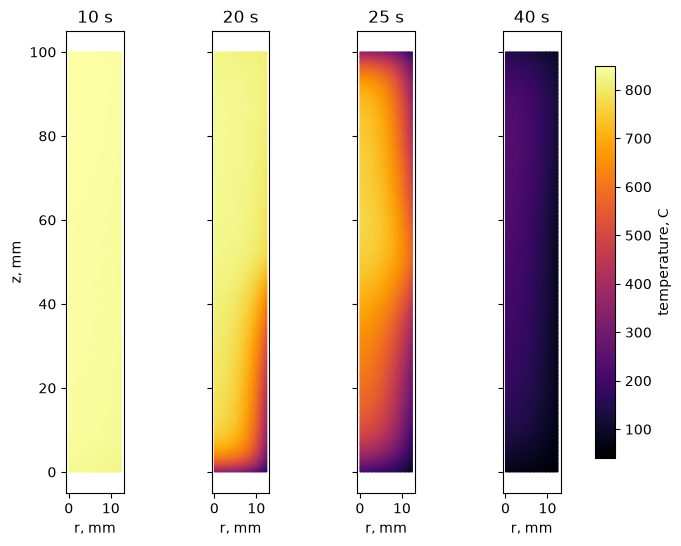
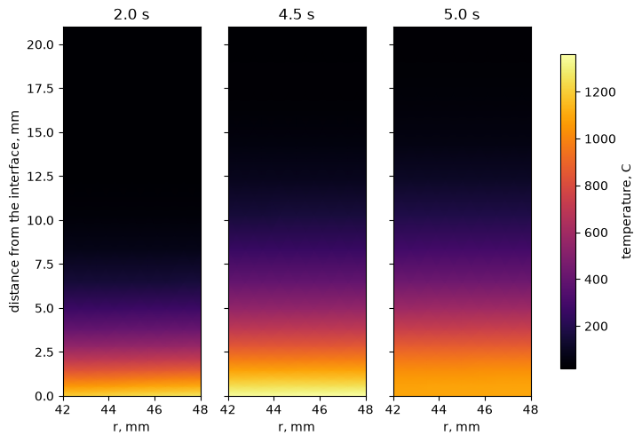
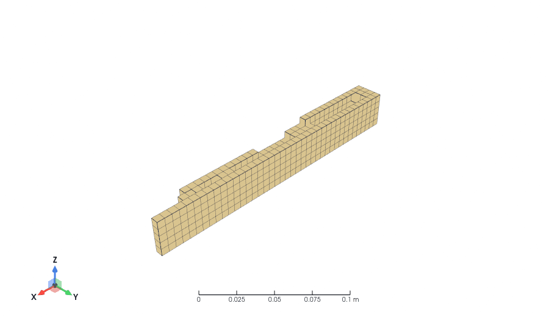
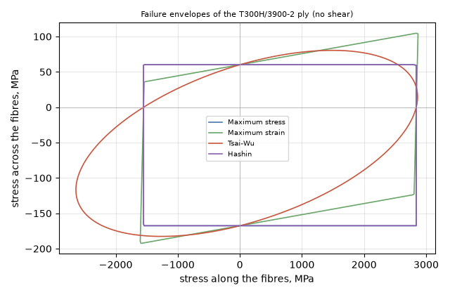
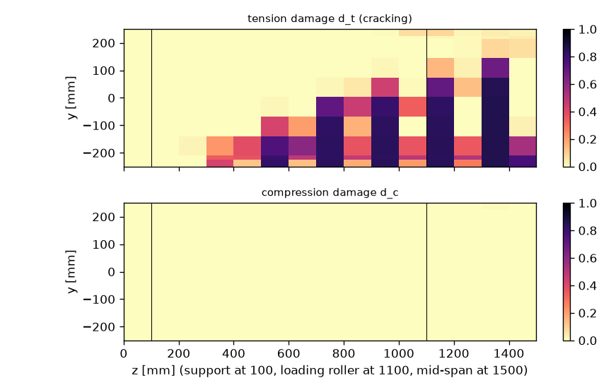
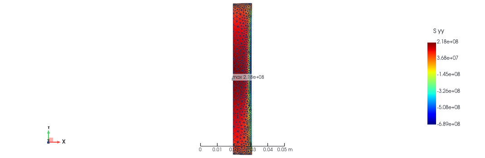

Deep drawing
A sheet drawn over a die with rigid tools: forces, stages, stress and plastic strain.
First commands, worked examples you can open and re-run, the benchmark numbers, and training when you want a guide.
Open the studio, load a worked example, then run the benchmarks on your own machine.
# the studio
python -m sim2pro
# open a worked example
python -m sim2pro --example cantilever
# benchmarks against theory
python -m sim2pro.verificationEach one goes from mesh to result, with the script that rebuilds it.
A sheet drawn over a die with rigid tools: forces, stages, stress and plastic strain.

Film coefficients from thermocouples, then the temperature field through the quench.

Friction law, flywheel run-down and the temperature near the interface.

Buckling modes of a beam under point and line loads.

Material removed pass by pass while the stress is watched.

Four failure criteria on one ply, then a laminate and a coupon.

Cracking and crushing stages up to the end of the test.

Residual stress and plastic strain left by the cooling and the transformation.
A sample of the benchmark registry. Each row is a run you can repeat on your own machine.
| Benchmark | Quantity | Computed | Reference | Error |
|---|---|---|---|---|
| C01 Constrained plate, uniform heating | In-plane stress | −359.99 MPa | −360.00 MPa | 0.004 % |
| C02 Copper / invar strip heated by 100 K | Tip deflection | 5.793 mm | 5.709 mm | 1.47 % |
| C03 Satoh test, S355 bar | Elastic stress at 100 °C | −209.40 MPa | −209.66 MPa | 0.13 % |
| L03 Cantilever, tip load 1 MN | Tip deflection | 19.063 mm | 19.048 mm | 0.08 % |
| L06 Bar, suddenly applied load | Peak / static displacement | 1.992 | 2.000 | 0.42 % |
SiM2Pro calls no language model itself. It serves the Model Context Protocol, and Claude Code connects as the client.
The server answers on your own machine only, needs a token, and has a read-only mode.
Prefer a guide in the room?
Courses built around your parts and your process: the studio and its products, nonlinear analysis, and scripting a study.
The part, the process, the question. We reply with what a study would take and what it would show.